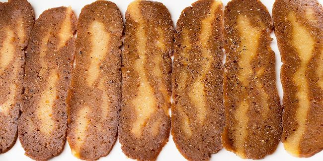

Bacon Selection
When selecting bacon there are a few things to keep in mind. You want a good quality bacon for maximum enjoyment. The best bacon is a good thick bacon that is peppered. You don't want some bacon that is thin and tastes like cardboard.

Example of BOUNCE effect
Bacon Cooking
When cooking bacon you want to make sure that it is cooked until nice and crip. You don't want to over cook the bacon though because burnt bacon just isn't near as good. But you don't want to undercook it either and miss out on all the crispy goodness.

No! |

YES!!! |

No! |
Example of COLOR ANIMATION effect |
Bacon Eating
There is no wrong way to eat bacon. Eating bacon can be done by the handfull, one at a time, on top of any other food, inside of other foods, etc. The only wrong way to eat bacon is to buy vegan bacon because that just isn't bacon.

Example of EXPLODE and FADEIN effects